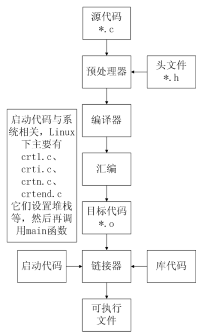

gcc -v //查看环境变量
gcc 同 g++
gcc main.c -o main.exe
gcc main.c //默认生成a.exe
预处理: gcc -E main.c -o main.i
编译: gcc -S main.i -o main.s //同时做语法检查
汇编: gcc -c main.s -o main.o
链接: gcc main.o -o main.exe
// 主要存在于scanf,strcpy,sprintf等
#pragma warning(disable:4996) //防止4996错误
#define _CRT_SECURE_NO_WARNINGS //防止4996错误说明：
1)宏名一般用大写，以便于与变量区别；
2)宏定义可以是常数、表达式等；
3)宏定义不作语法检查，只有在编译被宏展开后的源程序才会报错；
4)宏定义不是C语言，不在行末加分号；
5)宏名有效范围为从定义到本源文件结束；
6)可以用#undef命令终止宏定义的作用域；
7)在宏定义中，可以引用已定义的宏名；
8)用括号括住每一个参数，并括住宏的整体定义。
#define MYADD(x,y) ((x)+(y))
/*
1)宏的名字中不能有空格，但是在替换的字符串中可以有空格。ANSI C允许在参数列表中使用空格；
2)用括号括住每一个参数，并括住宏的整体定义。
3)用大写字母表示宏的函数名。
4)如果打算宏代替函数来加快程序运行速度。假如在程序中只使用一次宏对程序的运行时间没有太大提高。
*/#define 标识符
...
#ifdef 标识符
程序段1
#else
程序段2
#endif
#define DEBUG
#ifdef DEBUG
void func()
{
printf("debug版本调用\n");
}
#else
void func()
{
printf("release版本调用\n");
}
#endif#define 标识符
...
#ifndef 标识符
程序段1
#else
程序段2
#endif#if 表达式
程序段1
#else
程序段2
#endif
#if 1
void func()
{
printf("debug1版本调用\n");
}
#else
void func()
{
printf("debug2版本调用\n");
}
#endif